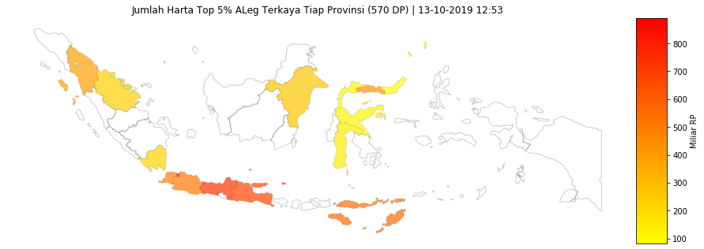
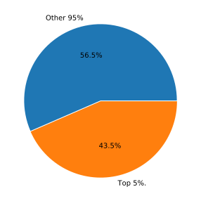

Last updated: 13-10-2019 12:53
Data Science Wakil Rakyat
Top 5% ALeg Terkaya
575 ALeg | 570 Seed Data Points
Visualisasi dan Olah Data Terbuka Anggota DPR RI 2019.
Data tidak / kurang akurat? Bantu kami meningkatkan kualitas data dengan mengisi form ini.

Top 5% ALeg Partai
| # | Partai | ALeg | Jumlah Harta | Mean |
|---|---|---|---|---|
| 1 | Gerindra | 3 | 320.4 | 106.8 |
| 2 | Golkar | 10 | 1809.0 | 180.9 |
| 3 | NasDem | 5 | 1088.5 | 217.7 |
| 4 | PAN | 3 | 480.9 | 160.3 |
| 5 | PDIP | 6 | 1755.4 | 292.6 |
| 6 | PKB | 2 | 211.8 | 105.9 |

Top 5% ALeg Provinsi
| # | Provinsi | ALeg | Jumlah Harta | Mean |
|---|---|---|---|---|
| 1 | Banten | 1 | 484.4 | 484.4 |
| 2 | DKI Jakarta | 5 | 891.5 | 178.3 |
| 3 | Gorontalo | 1 | 419.0 | 419.0 |
| 4 | Jawa Barat | 3 | 503.3 | 167.8 |
| 5 | Jawa Tengah | 5 | 723.8 | 144.8 |
| 6 | Jawa Timur | 3 | 671.8 | 223.9 |
| 7 | Kalimantan Timur | 1 | 260.6 | 260.6 |
| 8 | Lampung | 2 | 218.8 | 109.4 |
| 9 | Nusa Tenggara Timur | 2 | 544.8 | 272.4 |
| 10 | Riau | 2 | 233.0 | 116.5 |
| 11 | Sulawesi Selatan | 1 | 140.0 | 140.0 |
| 12 | Sulawesi Tengah | 1 | 111.8 | 111.8 |
| 13 | Sulawesi Utara | 1 | 82.7 | 82.7 |
| 14 | Sumatera Utara | 1 | 380.2 | 380.2 |
Top 5% ALeg
| # | ALeg | Jumlah Harta | Partai | Provinsi |
|---|---|---|---|---|
| 1 | ANDI ACHMAD DARA | 484.4 | Golkar | Banten |
| 2 | RACHMAD GOBEL | 419.0 | NasDem | Gorontalo |
| 3 | HERMAN HERY | 418.1 | PDIP | Nusa Tenggara Timur |
| 4 | SIHAR P.H. SITORUS | 380.2 | PDIP | Sumatera Utara |
| 5 | PUAN MAHARANI | 363.8 | PDIP | Jawa Tengah |
| 6 | HAENY RELAWATI R.W. | 331.8 | Golkar | Jawa Timur |
| 7 | EDDY SOEPARNO | 265.6 | PAN | Jawa Barat |
| 8 | RUDY MAS'UD | 260.6 | Golkar | Kalimantan Timur |
| 9 | SOEHARTONO | 252.0 | NasDem | Jawa Timur |
| 10 | ERIKO SOTARDUGA B.P.S | 249.8 | PDIP | DKI Jakarta |
| 11 | AHMAD SAHRONI | 208.1 | NasDem | DKI Jakarta |
| 12 | CHARLES HONORIS | 207.9 | PDIP | DKI Jakarta |
| 13 | ARSYAD JULIANDI RACHMAN | 140.5 | Golkar | Riau |
| 14 | LA TINRO LA TUNRUNG | 140.0 | Gerindra | Sulawesi Selatan |
Top 5% ALeg
| # | ALeg | Jumlah Harta | Partai | Provinsi |
|---|---|---|---|---|
| 15 | EFFENDI MUARA SAKTI SIMBOLON | 135.6 | PDIP | DKI Jakarta |
| 16 | JOHNNY G. PLATE | 126.8 | NasDem | Nusa Tenggara Timur |
| 17 | INTAN FITRIANA FAUZI | 125.1 | PAN | Jawa Barat |
| 18 | MUHAMMAD KHADAFI | 123.7 | PKB | Lampung |
| 19 | WENNY HARYANTO | 112.6 | Golkar | Jawa Barat |
| 20 | MUHIDIN MOHAMAD SAID | 111.8 | Golkar | Sulawesi Tengah |
| 21 | BAMBANG SOESATYO | 98.0 | Golkar | Jawa Tengah |
| 22 | HM. AZIS SYAMSUDDIN | 95.1 | Golkar | Lampung |
| 23 | NURZAHEDI | 92.5 | Gerindra | Riau |
| 24 | SINGGIH JANURATMOKO | 92.0 | Golkar | Jawa Tengah |
| 25 | EKO HENDRO PURNOMO | 90.1 | PAN | DKI Jakarta |
| 26 | NUR YASIN | 88.0 | PKB | Jawa Timur |
| 27 | MOHAMAD HEKAL | 87.8 | Gerindra | Jawa Tengah |
| 28 | FELLY ESTELITA RUNTUWENE | 82.7 | NasDem | Sulawesi Utara |
| 29 | DITO GANINDUTO | 82.2 | Golkar | Jawa Tengah |